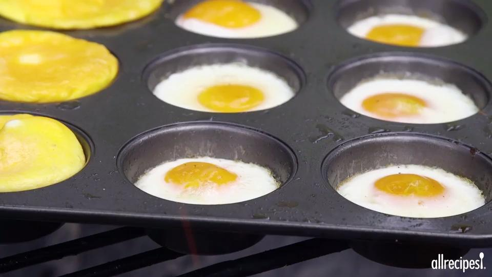

Eggs on the Grill

Have you ever tried eggs on the grill by using a muffin pan? Just spray the pan and crack the eggs and put them on the grill. Try adding some chopped peppers and onions or anything to your liking.
Ingredients
Steps
- Preheat an outdoor grill for medium high heat
- Coat all holes of a muffin pan with cooking spray and crack an egg into each hole.
- Place on grill and grill over medium high heat for 2 minutes, or to desired doneness.
Nutrition Facts
- 143 calories
- 12.6g protein
- 0.8g carbs
- 9.9 fat
- 372mg cholesterol
- 140mg sodium
Recipe Source